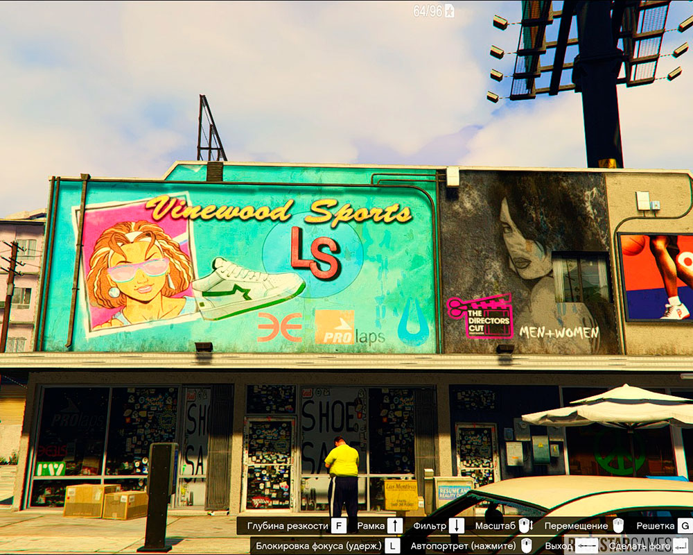

Отсылки на другие игры
Отсылки к предыдущим частям серии не обошли и GTA 5. Так, на одной из улиц города можно увидеть баннеры, на которых были использованы части артов по игре GTA Vice City.
На стене бара Tequi-la-la, который можно приобрести, висит афиша фильма «Full moon», известного по GTA Vice City Stories. Сам фильм далёкого 1984 года, ужасно оценённый критиками, а сам постер тех времён является аллюзией на пятую точку вашего тела.
А в единственном баре, доступном игроку, в Сенди Шорс, на стене за барной стойкой можно увидеть 69 долларовые купюры с частью арта по GTA San Andreas. Кстати, данные купюры были на ногах стриптизёрш в GTA IV. Помимо этого, раскраска машины, которую мы получаем за нахождение всех мозаик обезьяны, является отсылкой на игровой автомат из GTA SA. Среди многочисленных домов в Сенди Шорс можно увидеть тот, на крыльце которого находится стол с игральными картами. Если подойти ближе, то можно разглядеть плакат розыска главного героя GTA IV, который был использован для рекламы игры в 2008 году. Так же, Нико можно увидеть на мониторе ноутбука Джимми и много где ещё.
игре так же имеется отсылка на другую игру от Rockstar — Red Dead Redemption. На майке очередного прохожего можно увидеть главного героя игры.